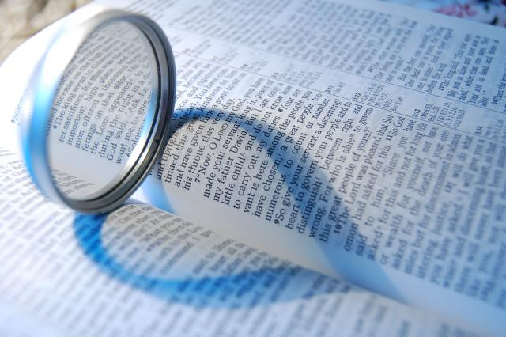

Proceedings of the Marriage Service
Many of us might have seen a Christian Marriage. For those who have not witnessed any, read through to have a quick glimpse of the marriage
proceedings in the church and do come to witness the grandest ceremony ever thrown by us.For those who know about it, I hope this might
serve as a good read.
Excerpts are taken from the proceedings of a Syro-Malabar Christian marriage.
The wedding ceremony is held at the parish church at the groom's place.The day begins early for all relatives and friends of either side, not to say much earlier for the bride, thanks to the special bridal make-up she has to go through. Once ready, the bride and her side set out early enough to reach the church well in advance.
The bride and the groom enter the church from the main entrance, followed by their parents, family members, friends, and all invitees. The bride and the groom as well a few family members carry some offerings. As they slowly walk towards the altar, the choir sings the ever-familiar song "aadiyilakhileshan narane srushttichu...!"The offerings are submitted before the altar, which are accepted by the priest.
It is very significant that it is God Himself, not the priest, who confers the sacrament of the Holy Matrimony. The priest is the witness to the man and woman making their vows before God. The bride and the groom minister the sacrament to themselves from God. The church function constitutes the wedding ritual followed by the Nuptial Mass (optional, but very common) and special prayers for the married couple and the benediction for the couple by the priest. There is a series of short but very lovely and meaningful rituals followed by prayers, and special blessings and benedictions for the newly-wed couple.The wedding ceremony starts straightaway.
After a short prayer, the priest asks both the bride and the groom simultaneously: "What do you wish?" The couple-to-be must answer: "We wish to be united each other by the sacrament of marriage."
Now, the priest asks the groom,(name) by the will of God and by the rule of the Church, do you accept (name) as your wife?" The groom must answer in the affirmative honestly. The priest then puts the same question to the bride: (name), by the will of God and by the rule of the Church, do you accept (name) as your husband?" The bride is to answer in the affirmative honestly.
Next, the bride and the groom hold each other's palm. The priest then formally ratifies the marriage with the words: "I unite you in wedlock in the name of the Father and of the Son and of the Holy Spirit." Now, it is time for the groom to tie the knot. The priest blesses the 'thali' and hands it over to the groom who ties it around the bride's neck.
The choir fittingly sings "puthiya kudumbathin kathirukaluyarunnu...!"
The groom should now clothe his bride with the 'manthrakodi'. For this, the priest blesses the sari (folded a few times) and gives it to the groom, who puts it over the head of the bride. The priest now blesses the wedding rings and hands over one of the rings (with the groom's name etched on it) to the groom. The groom places the ring upon the ring finger of the bride's left hand. Likewise, the priest gives the other ring (with the bride's name) to the bride who places it upon the groom's ring finger.
And now, both the bride and the groom take a solemn oath by placing their right hands on the Bible: "From today onwards, for better and for worse, for richer and for poorer, in sickness and in health, we shall love each other, and live in peace and fidelity, till death do us part!" The priest now blesses the couple: "What God has joined together, let no man put asunder."
Now, the special Holy Mass (Nuptial Mass) starts. In between the Mass, the priest delivers a special Homily emphasizing the sanctity of marriage. At the end of the Mass, the priest offers the final benediction for the new couple. He prays that the new couple have the assistance and support of many friends, should the couple face any problem or hardship. He also prays for all those who blessed the couple with their presence and prayers.
There will now be a photo session. The bride then takes sometime off to wear the newly gifted 'manthrakodi'! Another photo session follows with the bride in her new attire.
Now, everyone heads for the reception. The reception may be held in the church itself, at the groom's house, or any other suitable location. After the reception, the bride and the groom leave for the groom's house, followed by the members of both the sides. It is usually the first time that the bride gets to see her matrimonial house and the locality where the most special person in her life grew up.
After a brief halt at the groom's house, the bride's family members bid farewell, wishing the newly-wed couple a happy and peaceful married life!
Excerpts are taken from the proceedings of a Syro-Malabar Christian marriage.
The wedding ceremony is held at the parish church at the groom's place.The day begins early for all relatives and friends of either side, not to say much earlier for the bride, thanks to the special bridal make-up she has to go through. Once ready, the bride and her side set out early enough to reach the church well in advance.
The bride and the groom enter the church from the main entrance, followed by their parents, family members, friends, and all invitees. The bride and the groom as well a few family members carry some offerings. As they slowly walk towards the altar, the choir sings the ever-familiar song "aadiyilakhileshan narane srushttichu...!"The offerings are submitted before the altar, which are accepted by the priest.
It is very significant that it is God Himself, not the priest, who confers the sacrament of the Holy Matrimony. The priest is the witness to the man and woman making their vows before God. The bride and the groom minister the sacrament to themselves from God. The church function constitutes the wedding ritual followed by the Nuptial Mass (optional, but very common) and special prayers for the married couple and the benediction for the couple by the priest. There is a series of short but very lovely and meaningful rituals followed by prayers, and special blessings and benedictions for the newly-wed couple.The wedding ceremony starts straightaway.
After a short prayer, the priest asks both the bride and the groom simultaneously: "What do you wish?" The couple-to-be must answer: "We wish to be united each other by the sacrament of marriage."
Now, the priest asks the groom,(name) by the will of God and by the rule of the Church, do you accept (name) as your wife?" The groom must answer in the affirmative honestly. The priest then puts the same question to the bride: (name), by the will of God and by the rule of the Church, do you accept (name) as your husband?" The bride is to answer in the affirmative honestly.
Next, the bride and the groom hold each other's palm. The priest then formally ratifies the marriage with the words: "I unite you in wedlock in the name of the Father and of the Son and of the Holy Spirit." Now, it is time for the groom to tie the knot. The priest blesses the 'thali' and hands it over to the groom who ties it around the bride's neck.
The choir fittingly sings "puthiya kudumbathin kathirukaluyarunnu...!"
The groom should now clothe his bride with the 'manthrakodi'. For this, the priest blesses the sari (folded a few times) and gives it to the groom, who puts it over the head of the bride. The priest now blesses the wedding rings and hands over one of the rings (with the groom's name etched on it) to the groom. The groom places the ring upon the ring finger of the bride's left hand. Likewise, the priest gives the other ring (with the bride's name) to the bride who places it upon the groom's ring finger.
And now, both the bride and the groom take a solemn oath by placing their right hands on the Bible: "From today onwards, for better and for worse, for richer and for poorer, in sickness and in health, we shall love each other, and live in peace and fidelity, till death do us part!" The priest now blesses the couple: "What God has joined together, let no man put asunder."
Now, the special Holy Mass (Nuptial Mass) starts. In between the Mass, the priest delivers a special Homily emphasizing the sanctity of marriage. At the end of the Mass, the priest offers the final benediction for the new couple. He prays that the new couple have the assistance and support of many friends, should the couple face any problem or hardship. He also prays for all those who blessed the couple with their presence and prayers.
There will now be a photo session. The bride then takes sometime off to wear the newly gifted 'manthrakodi'! Another photo session follows with the bride in her new attire.
Now, everyone heads for the reception. The reception may be held in the church itself, at the groom's house, or any other suitable location. After the reception, the bride and the groom leave for the groom's house, followed by the members of both the sides. It is usually the first time that the bride gets to see her matrimonial house and the locality where the most special person in her life grew up.
After a brief halt at the groom's house, the bride's family members bid farewell, wishing the newly-wed couple a happy and peaceful married life!